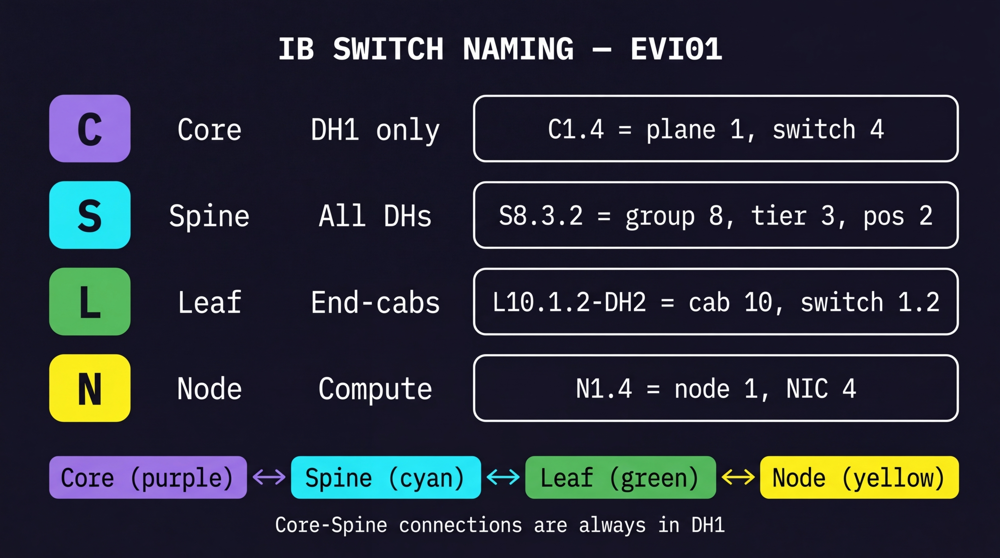
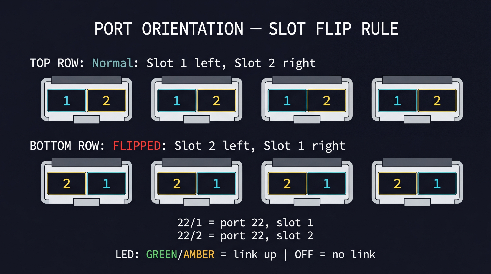
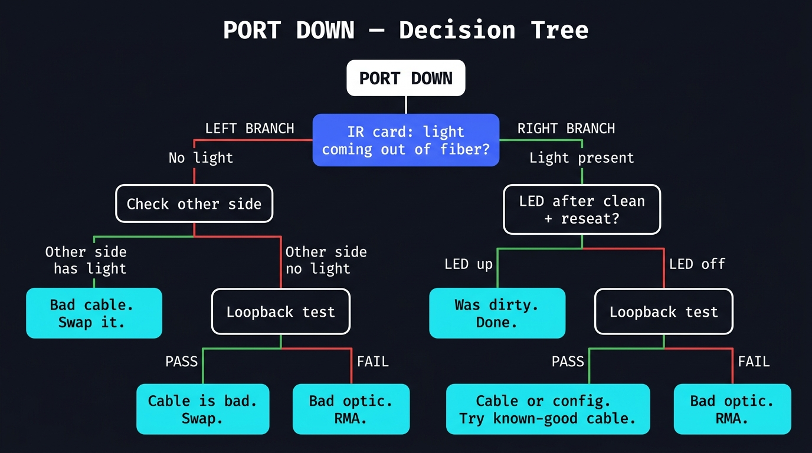
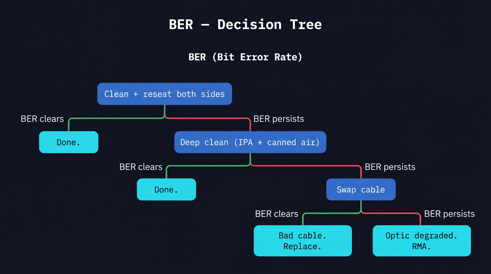
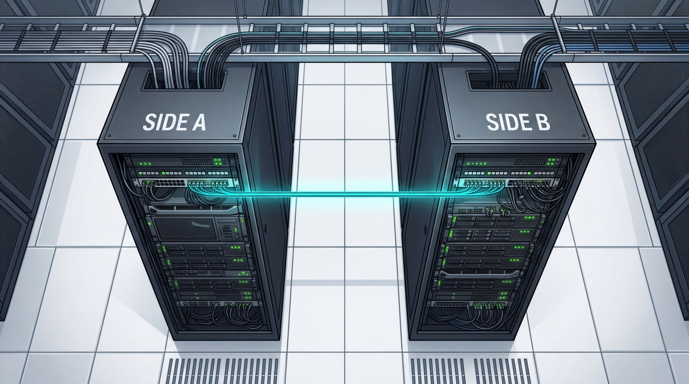
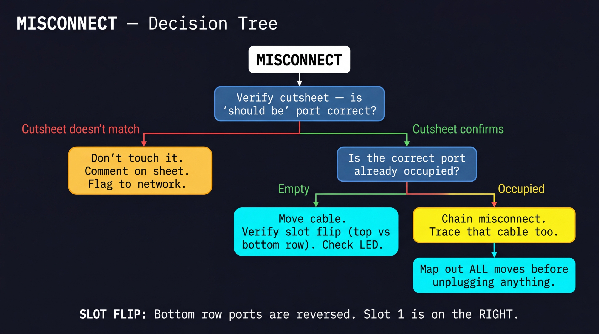
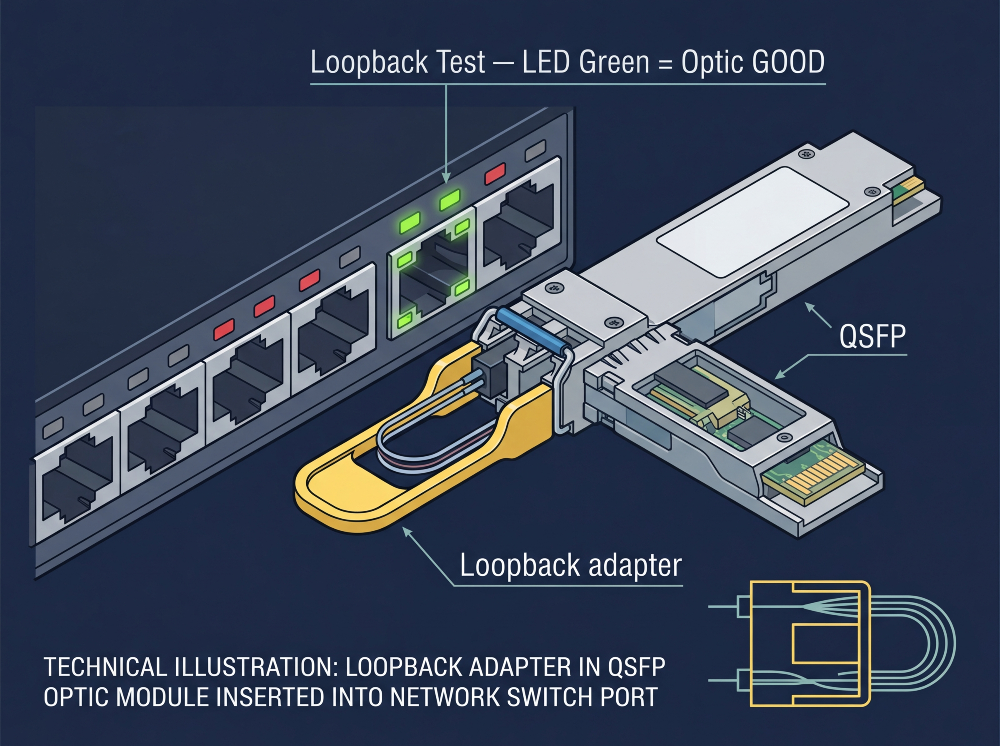
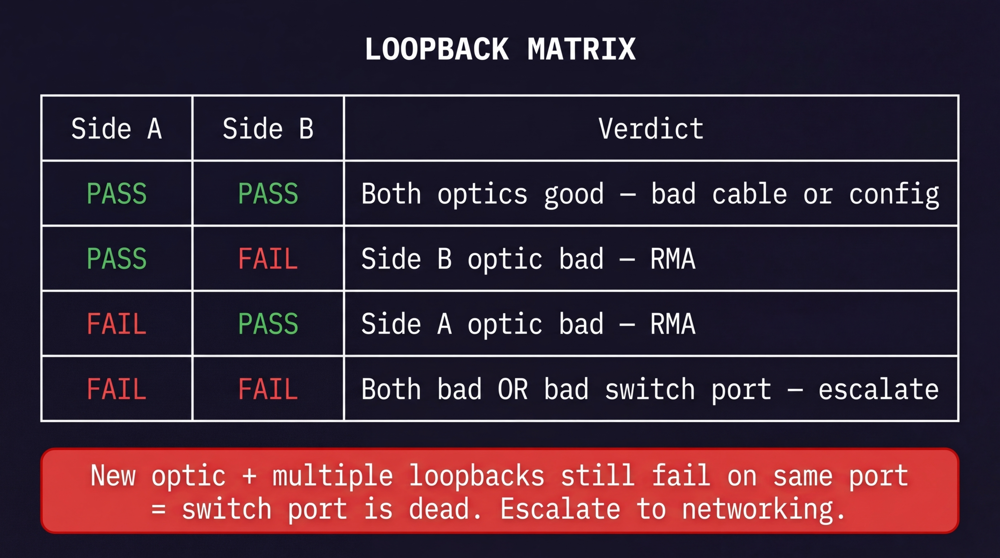

Read the Burndown Sheet
The sheet tells you three things: what's wrong, where Side A is, and where Side B is.
Port Down
C7.19 22/1 => S7.6.3 10/1
No signal between these two ports. Something is blocking light from getting through.
BER (Bit Errors)
C7.19 22/1 => S7.6.3 10/1
Link is up but signal is dirty. Usually means dirty fiber or a bad cable.
Misconnect
C2.17 13/2 should be → S2.4.2 9/1
but is → S2.4.2 9/2
Cable is plugged into the wrong port. Needs to be moved.
Reading the Notation
C7.19 = switch name
22 = port number
/1 = lane (which slot on the optic)
=> means "is connected to"
Know Your Switches
The first letter tells you what kind of switch it is. That tells you where to look.

C Core
Top of the tree. Only in DH1. Example: C1.4 = plane 1, switch 4.
S Spine
Middle tier. In all data halls. Example: S8.3.2 = group 8, tier 3, position 2.
L Leaf
End of row, connects to nodes. Example: L10.1.2-DH2 = cabinet 10, switch 1.2, DH2.
N Node
Compute node (GPU server). Example: N1.4 = node 1, NIC 4.
C1.4 = Core cab 1. L10.1.2 = Cab 10. Use the overhead map to locate it on the floor, then the IB Sketch elevation tabs to find the switch inside the cab.Port Orientation (The Flip)
This is the #1 cause of accidental misconnects. Bottom-row optics are mirrored.

Top row: slot 1 on the LEFT.
Bottom row: slot 1 on the RIGHT.
Each slot has its own LED. Green/Amber = link up. Off = no link.
Port Down
No signal. Your job: figure out which piece is broken — optic, cable, or switch.
Start here: IR card
Pull the fiber out. Hold the IR card up to the tip. Is there a pink/purple glow?
Light = the optic on this side is sending.
No light = the problem might be on this side.

How to read this
- IR card the fiber on Side A. Light? Then that optic is transmitting fine.
- Go to Side B and IR card that fiber too.
- Both sides have light, but no link? Clean + reseat. If still down, swap the cable.
- One side has no light? Loopback test that side's optic. FAIL = bad optic, RMA it.
- Neither side has light? Loopback both. Whichever fails = bad optic.
BER (Bit Error Rate)
Link is up but the signal is noisy. Escalate the fix until it clears.

Escalation ladder
- Standard clean + reseat — both sides. Check if BER clears.
- Deep clean — IPA wipe + canned air on both optics and fiber tips. Check again.
- Swap the cable — use a known-good cable. If BER clears, the old cable was bad.
- Still errors? The optic is degraded. RMA it.
Key idea: you're changing one variable at a time. If the BER clears after step N, the thing you changed at step N was the problem.
Misconnect
Cable is in the wrong port. Before you move anything — verify the cutsheet is right.

Two racks, one cable
Every burndown entry has a Side A and a Side B. The cable connects them. A misconnect means one end (or both) is in the wrong slot.

Before you unplug
- Verify the cutsheet — does the "should be" port in the burndown match what IB Sketch says? If not, don't touch it. Comment on the sheet and flag to networking.
- Is the correct port empty? If yes, move the cable there. Check LED.
- Correct port is occupied? That's a chain misconnect. Trace what's in that port too — you may need to move 2-3 cables in sequence.
- Map all moves first. Write down every cable you need to move before unplugging anything.
Loopback Matrix
A loopback test tells you if an optic is good or bad. Test both sides, read the grid.

What it does
A loopback adapter sends the optic's own light back to itself. If the LED comes up, the optic can both send and receive — it's healthy.
PASS = optic is good.
FAIL = optic is dead or degraded.

| Side A | Side B | What it means |
|---|---|---|
| PASS | PASS | Both optics fine — cable or config is the problem |
| PASS | FAIL | Side B optic is bad — RMA it |
| FAIL | PASS | Side A optic is bad — RMA it |
| FAIL | FAIL | Both bad, or the switch port itself is dead — try fresh optics, if still fails, escalate |
Escalate
When to escalate
- Loopback fails with a new optic
- Known-good cable won't link after both optics pass
- Cutsheet doesn't match the burndown entry
What to include
Comment on the Google Sheet row with:
- Switch name + port
- What you tested (clean, loopback, cable swap)
- LED result + IR card result